机械学习算法入门03
逻辑回归算法
算法公式
逻辑回归算法是一种广义的线型回归分析模型
我们之前聊的线型回归模型,它只能预测一个与实际误差较小的具体值,而没有办法满足二分类的要求.
而逻辑回归就是一种专门解决二分类问题的算法,但是二分类的算法不止能用于二分类,还可以用于多分类.
在聊完逻辑回归怎么用于二分类之后,我们再聊怎么将它用于多分类.
我们知道我们逻辑回归的函数长这个样子
而我们的逻辑回归则是长这个样子
而其中的z函数就是我们的z就是我们的H(θ),即线型回归的数据模型,那么我们逻辑回归函数怎么进行而分类呢?
要理解这个问题,我们需要先知道逻辑回归函数的在图上长什么样子,首先,在w0和w1存在的情况下长这个样子
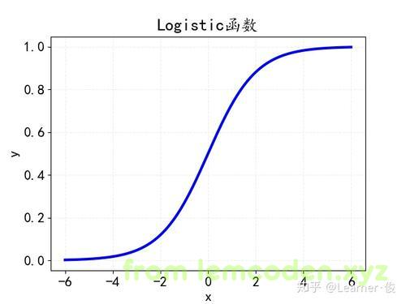
x横轴坐标表示我们z的值,
我们发现y值的区间为0到1并且两边不包含,也就是y的最小值无限趋近于0,y的最大值无限趋近于1
而当H(θ)等于0的时候,即w_0+w_1x_1+w_2x_2+…+w_{n}x_{n}=0,表示下面这一条竖线
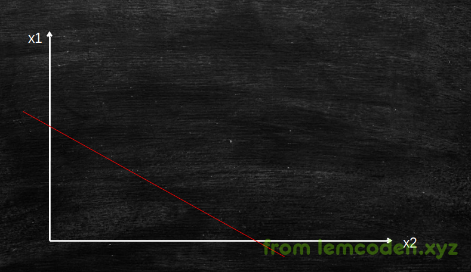
当我们的H(θ)大于0的时候,我们逻辑回归中的y值大于0.5,当我们的H(θ)值小于0的时候,我们的y值小于0.5
所以我们可以把y=0.5作为一个阈值,当我们的y大于0.5的时候,我们判定为A类,当我们的y值小于0.5的时候我们判定为B类
那么如果y=0.5呢?
这个情况发生的机率不是很大,我们可以在实际工程当中,将y=0.5手动划分到A类或者B类
阈值调节
需要注意的是逻辑回归的二分类算法中二分类的阈值在实际工程项目中要灵活调节,举个例子
比如说,我们有一个医疗方面的需求,根据输入的病人的情况进行分类,预测出是否有癌症.
然后肯定会出现预测错误的情况,具体的错误情况有这两种:
-
病人没有癌症,但是却预测出了癌症
-
病人有癌症,却没有预测出癌症
以上两种情况,哪种情况更可怕?
当然是第二种了,没有预测出癌症的癌症病人高高兴兴回家了,到头来却发现自己没有多少天了,
所有我们会把没有预测出癌症这个门槛调高一些,怎么调高,修改阈值呗,假如高于阈值是癌症,低于阈值不是癌症,那么我就把阈值调低一点,调到0.3,高于0.3的是癌症,低于0.3的不是癌症
上采样与下采样
问题1.实际操作过程当中,癌症病人的数量远远小于不是癌症病人的数量
即,训练集的数据发生了严重的数据倾斜,那么在实际训练过程中,如下图
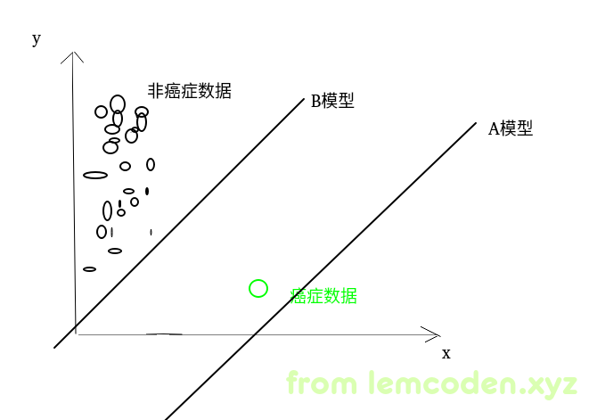
就像上面的数据,假如我们有一万条的非癌症数据,一条癌症数据,那么即使我们训练出A模型,那么我们的正确率仍然是很高的,10000/10001的正确率,但是这样的话,我们几乎无法测出癌症的结果,就跟我们写一个程序,所有的输出都是true一样,这个模型基本没办法用.
怎么解决?有两种方法,一种上采样,一种下采样
-
上采样:癌症病人复制10000份
-
下采样:抽取非癌症病人的部分样本
不论是上采样还是下采样他们最终的目的都是希望两类的数据的权重都是一样的.
升维
问题2.如果我当前维度的数据不足以进行分类怎么办?
比如说我的数据像下面这样
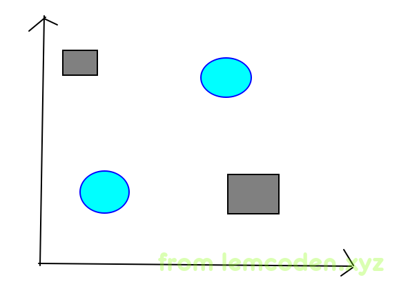
假如矩形是一类,圆形属于一类,那么我们就没办法在其中画一条回归线,区分两者
解决这种问题的方法有两个:
- 升高维度,通过原来的维度计算出新的维度,再训练出新的模型,利用新模型进行分类,比如我们原来是二维的数据,通过数据升级为三维,训练出的模型表示的是一个面,利用一个面来分类(切割)三维的数据
- 更换分类算法
ps:什么时候升高维度呢?当我们进行了全面的测试,但是训练出来的模型准确率依旧很低的时候
误差函数与梯度下降公式推导
逻辑回归既然也是一种线型回归那么就离不开线型回归的训练套路即:
- 先随机给出W0,W1…的值
- 将训练集的数据代入到误差函数中,计算的出误差
- 误差与用户指定的误差对比
- 使用梯度下降法,用梯度下降函数调整W0,W1的值
- 重复2到3步,直到计算出的误差(收敛条件1)或者迭代数次(收敛条件2)达到我们所设置的阈值
那么问题来了,逻辑回归的误差函数什么样子,如下
这是针对于一条函数样本的误差,而针对所有数据方面的误差可以写作
其实逻辑回归的误差函数和线型回归一致,都是W0减去α乘以W0方向上的偏导数,关于逻辑回归误差函数的偏导数
第二行最后的Hθ(x)偏导的推导公式如下
误差函数的导数求出来了,那么直接代入梯度下降法公式就是
我们把中间的公式可以缩写成A,像这样
其中我们的θ就是所有Wi的集合,所以我们的公式可以写成这样
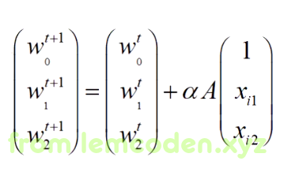
但是实际训练模型时,这样直接代入梯度下降公式会产生问题
方差归一化与均值归一化
举个栗子,比如说我们需要统计某个生态环境和动物数量的关系,数据样本如下
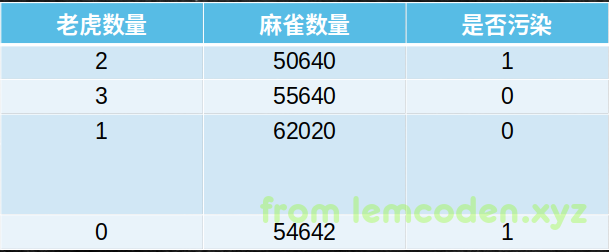
已知我们的老虎数量很少仅仅为个位数,但是麻雀数量很多,我们假设老虎数量是X1,麻雀数量是X2,那按照我们的梯度下降公式计算,
那么我们的X1会很小,但是X1所对应的W1的数值会很大
而我们的的X2会很大,但是X2所对应的W2的数值会很大
那么我们的梯度下降公式就会出现矛盾,就是数值很大的W1调节的步长会很小,而数值很小的W2调节的步长会很大
矛盾的根源再于各个特征值之间的差异很大,所以导致Wi和Xi的调节差异很大,那么怎么改变呢?
我们可以对特征数据进行数值归一化,上次我们聊过数值归一化的问题,我们当时使用的是,最大最小值归一化
它有一个缺点,就是容易收到离群值的影响
所以这个归一化的方法一般不被采用,我们一般采用方差归一化------求出总体数据的均方差,再让每个特征值除以它
因为涉及到平均数,即所有值都需要介入,所以它的抗干扰能力很强.
但是它可能不会让数据落到0到1之间,这是它的缺点.
我们来看一下求完方差之后的数据
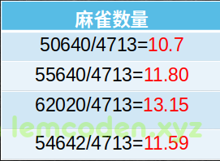
然后我们发现数据会缩小到很多,方差归一化其数量级差别没有原来那么大了.
但是我们还会有其他的问题,我们再回顾一下我们的误差函数
你会发现,这个误差函数,每个W的调整方向都是一致的,都是如果A是正数那么所有的W都增加,如果A为负数那么所有的W都减小
那么像下面这种情况
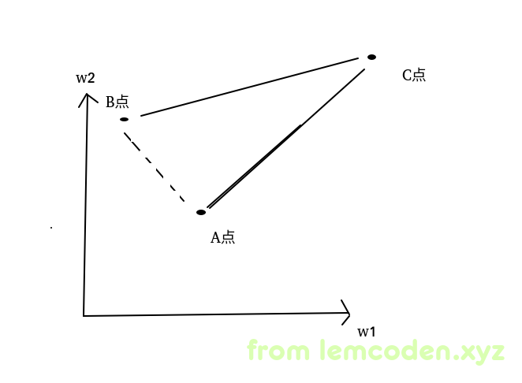
假设我们的W1(横轴),W2(竖轴)所确定的模型再A点,但是我们最佳的模型应该在B点,我们不能让W1减小W2增大来调整到B点,只能通过让我们的W1和W2都增大,增大到C点,然后w1和w2都减小,减小到B点
这样无缘无故会增加我们的迭代次数.
所以我们要从另一个调整因素即Xi入手,我们可以对进行方差归一化的数据进行再加工,让数据有方向即正负号
通过均值归一化-------------------求出平均值,然后用平均值减去每个特征值
因为特征数据中总有数据高于平均值,有数据低于平均值所以数据一定有方向
经过计算后数据长这个样子
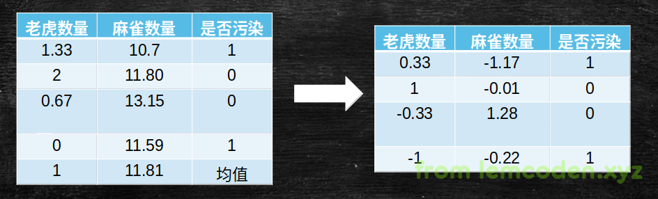
这样子就能避免W参数调整方向一致的问题
正则化
除了上面的一些特征数据的优化,我们还可以进行算法的优化.
先举个例子,以下的数据哪个模型相对好一点
0.5 和 5 对应W1
0.4和4 对应W2
0.3和3 对应W0
其实W值是大是小,都各有自己的有缺点:
- W很大,它会使训练的误差变小,但是容易受到离群值影响
- W很小,它会是训练的误差变大,但是抗干扰能力会变小
W很大,训练误差为什么会变小?
再回顾一下我们的公式
其中我们Z就是指的线型回归公式Hθ(x)=Wo+W1X1+W2X2+W3X3+…
W越大,我们计算出来的Z值就趋向于更大或更小,Z值更大或更小,我们最后计算出来的y值就会更趋向于0或者1
在实际生产环境中,W值不是越大越好,也不是越小越好,而是要调节到适当大小.
调节到适当大小有一个方法叫做正则化
什么是正则化?
我们直接看公式
中间为了表达方便,我把误差公式换成之前线型回归的均方差的了,其实正则化就是在误差公式后面加一个正则化项,而这个E函数就是新的正则化后的误差函数,这个正则化项为
对,这个正则化像很简单,就是W的绝对值,我们思考一下这个新的误差函数
如果我们尽可能让误差变小,那么一定会增加W值的大小,但是加了正则化项后,正则化项L1会变大,所以我们不会让W值变得特别大,L1正则项就是一个限制条件不会让我们的W值变得很大.也就是说我们是正确率(正确率大,误差小)与抗干扰能力同时兼顾.
当前演示的仅仅是L1正则化,还有L2正则化,公式如下
那么L1正则化和L2正则化有什么区别?我们应该怎么选?
-
L1正则化,趋向于让大部分W值变成0
-
L2正则化,趋向于让大部分W值整体变小
正则化会让W值变小(限制变大 ------> 变小)这没问题,L1正则化让W变成0什么鬼?
举个例子假如我们的W2=3 W1=3,如果我们进行L2正则化,那么就会出现这样的情况
如果我们降低W1的值,从3变为2,那么我们的误差函数的收益就是 9 - 4 = 5
如果我们再降低W1的值,从2变为1,那么E误差函数的收益为 4 - 1=3
收益降低了,那还不如转过头来降低W2的值,W2的收益为 9 - 4 = 5这个收益是很高的
但是如果是L1正则化那么,W2=3 W1=3的这种情况,是这样子的
降低W1,收益3-2=1
降低W1,收益2-1=1
它会持续降低W1值,因为收益不会降低
所以L1正则化也经常用于对数据进行降维
逻辑回归的优点:
- 计算代价低
- 易于理解和实现
缺点:
- 容易欠拟合
- 计算精度不高
决策树算法
概要
我们之前说逻辑回归算法,会出现一种无法分类的情况,数据大概是这样子:
我们说这种情况要么升维,要么换算法,换什么算法呢?就是当下要讲的决策树算法
决策树算法是一种非线性有监督的分类算法和线性,逻辑回归不同的是,它不是线性的连续的.
决策树算法可以生成一颗判断树,其中的每个节点,代表一个分类条件,分类条件的特征值,与分支对应,比如下面这个,左边代表是否是学生的分类条件
是的话,走左分支,不是的话走右分支
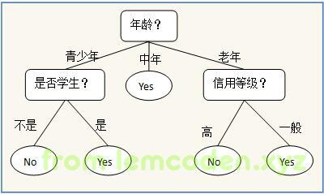
分类原则,信息熵,条件熵
我们构建这样一个决策树,有什么要求?
这棵树要尽可能的矮,这样可以减少模型进行分类时的时间,毕竟树越矮,它的判断路径越短.
那怎么才能让树尽可能的矮呢?
举个例子,我们要通过下面的特征值,来预测是否发生车祸
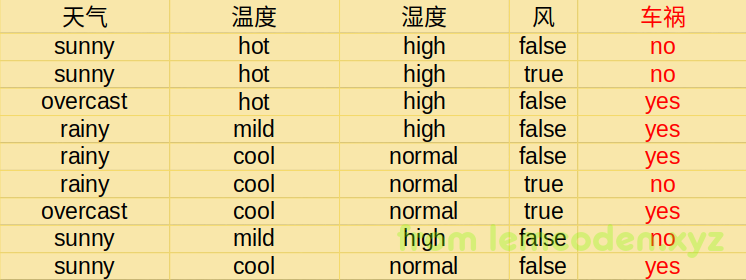
那我们构建的第一条判断条件,应该选哪个呢?
这还有讲究,对很有讲究,第一个条件分类信息的纯度,很大程度决定了树的高矮
比如说温度,温度分支为hot下的发生车祸的数据很多,而并不是差不多对半分,那么接下来进行数据判断的次数很可能变少
就像下面的数据集,有一半红色类别的,一般蓝色类别的,如果分割方式能最大程度的分割出大量同类的数据,那么我们就选择这种分割方式,即分割方式2
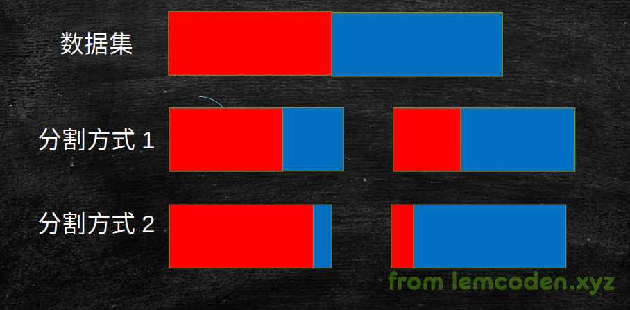
好了,分割方式知道了,但是计算机并不会这么识别,我们需要具体的算法和数值来体现出我们的信息的纯度
表现信息的纯度的公式如下
不过需要注意的是,这个值不是越大表述信息越纯的,而是和信息纯度成反比例,
这个指标叫做信息熵,用来描述信息的混乱程度
除了信息熵这个指标,我们还需要条件熵
而是条件熵,就是在某条件下这组数据的信息熵,
就按刚刚的例子来说,就是天气条件下我们车祸的信息熵,温度条件下车祸的信息熵,这是条件熵
条件熵的公式如下
再看一下图
回到我们最开始的问题,我们第一条分类怎么保证我们将数据分出来的纯度越大呢?
-
我们需要先计算我们车祸一开始的信息熵,
-
然后计算我们每一个条件下车祸的条件熵,
-
最后用信息熵减去我们的条件熵就能得出我们的信息增益量的多少
-
信息增益量最大的就是我们要找的那个分类
具体流程有了,我们象征性的代入一下公式
首先我们计算出车祸的信息熵为
然后计算出四组数据的条件熵
emmmmmm,对就按照这个公式计算剩下的条件熵(公式太多了故省略)
信息增益率,前剪枝,后剪枝
说完基本的建树思路后,我们来重新琢磨一下之前的数据
假如我添加一列数据,这个数据是ID列,即每一条数据都有自己的ID,那么我们把ID列加入到特征当中,那么这一列的条件熵一定是最小的,
即信息增益是最大的,我们只需要一层决策树就可以做决策分类,这样好吗?
当然不好,ID列的判断没有任何预测的意义,只能用于总结,这就已经是过拟合了
所以,不能单单用信息增益来选择分类条件
到这里信息增益率就出现了,下面公式给出来
就是我们的信息增益除以信息熵
我们的信息熵越小,信息增益率就越大,这样就限制了信息熵变得极小,导致模型过拟合
这个过程特别像我们的正则化,逻辑回归的误差函数添加一个正则项,限制误差变得很小,导致过拟合,增强抗数据噪声的能力
然后这里特别说明一句,两个算法的别名:
- 如果我们使用信息增益,我们叫它ID3算法
- 如果我们使用信息增益率,我们叫他c4.5算法
在构建决策树之前设置限制深度,叶子节点个数,叶子节点样本数,信息增益量等条件,这样减少树的枝叶的方法叫做前剪枝
有前剪枝叶,就有后剪枝,后剪枝是决策树已经建立,计算每个节点剪枝前后的误差函数,如果误差函数
误差公式如下
C(T)表示的是信息熵,Tleaf指的是叶子节点的多少
我举个例子,比如我们的决策树像下面这样
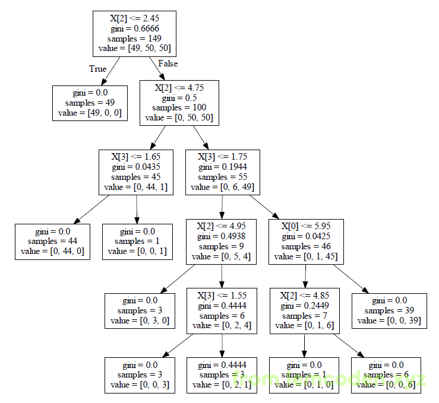
比如我们要剪枝的点在如下的枝桠上

我们首先计算这个点的误差,将这个点的数据代入公式(中间的jini系数可以用于表示信息熵),
而所有叶子节点的误差和为
最后我们对比一下两边的误差值如果要剪掉的枝桠的误差小于剪掉之后的误差,那就不会去剪掉,反之则相反
随机森林
我们先总结一下决策树,决策树是非线型的,所以不存在数据不可分的情况,我们之前逻辑回归的那种不可分的状况,决策树可以完美解决
就像下图,决策树在图形上会是多条线
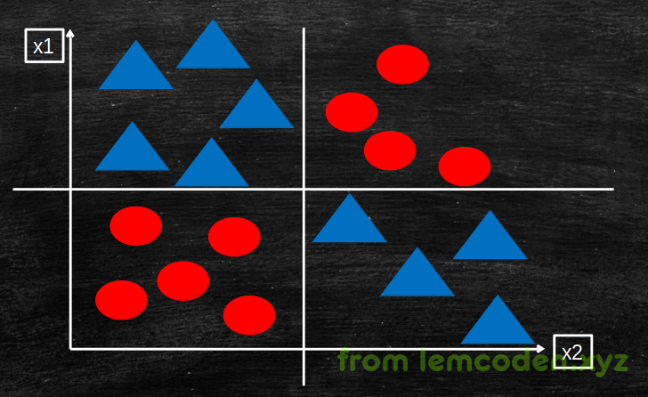
但是单棵决策树也是有缺点的,其缺点如下
-
决策树的计算量很大,需要将整个数据加载到内存当中,寻找分割点非常消耗资源
-
决策树抗干扰能力非常弱,几个简单的噪声数据,可能就会造成训练的模型不准确,因为决策树只能给出0和1,而逻辑回归是给出近似值
对于这种情况,我们可以:
- 减少决策树所需训练的样本
- 随机采样,降低异常数据的影响
但是减少训练的样本可能会造成模型欠拟合
所以我们最好使用随机森林算法
随机森林器是就是分布式多个节点上,每个节点随机抽取数据并训练出自己的一颗决策树,然后实际生产环境中,求出所有树的预测值,遵从少数服从多数的原则,求出训练结果